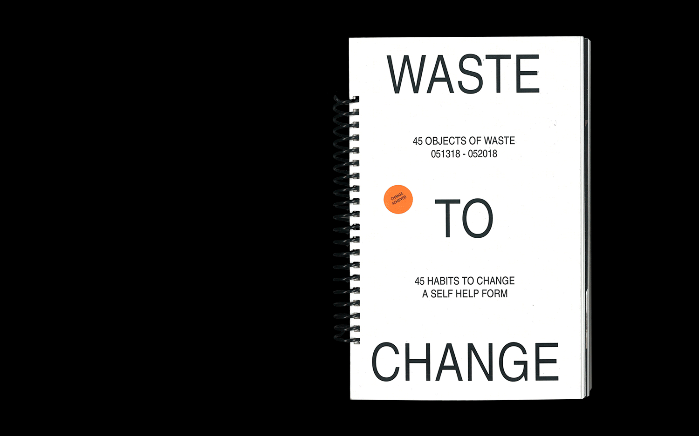
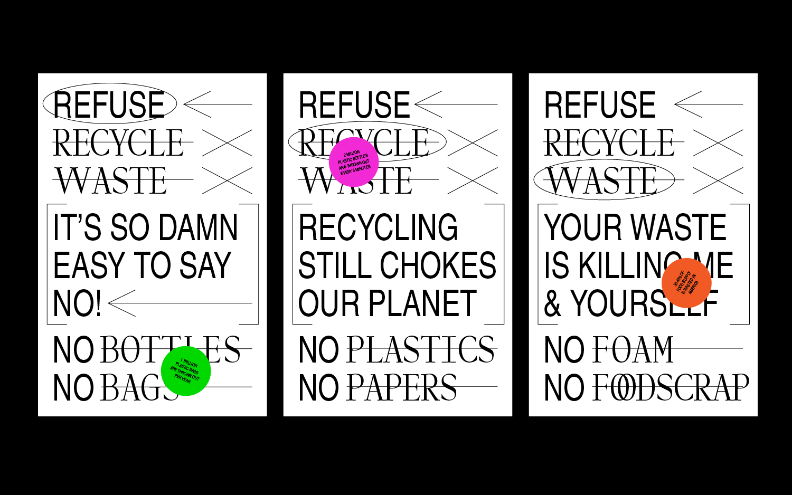

STEFANIE TAM
INFORMATION
06.2018; book: 6"x9.5", 3"x4.25"; posters: 24"x36", 18"x24"
From Waste to Change is a designed activism and sustainability project containing two triptych poster series, a book documenting a week's worth of waste, and a sticker packet to record your changed wasteful habits.
Archiving a total of 45 items of trash and their respective wasteful habits, FWTC offers 45 objectives in response to propose a healthier, more sustainable lifestyle.